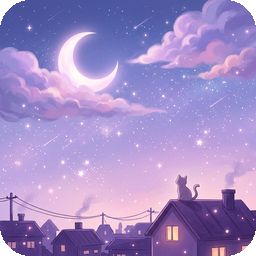

桌面窗口示意 ／ 不属于近景界面
留给你正在做的事。
中间没有整张底板。
小祈与局部控件之外，仍是你的桌面。
模型预览加载失败，请通过本地服务器打开。
A LITTLE MOMENT WITH YOU
01:1452
2026.11.20 FRI · 薄扶林 · 宿舍
天气暂未同步·夜深啦，声音放轻一点。
HER LITTLE MOMENT
在宿舍，听歌放空
今日用量等待统计
接入后显示真实消耗

LISTENING TOGETHER / 一起听
群青
YOASOBI · 网易云音乐
1:243:58
“嗯，听着呢。你慢慢说，我不着急。”